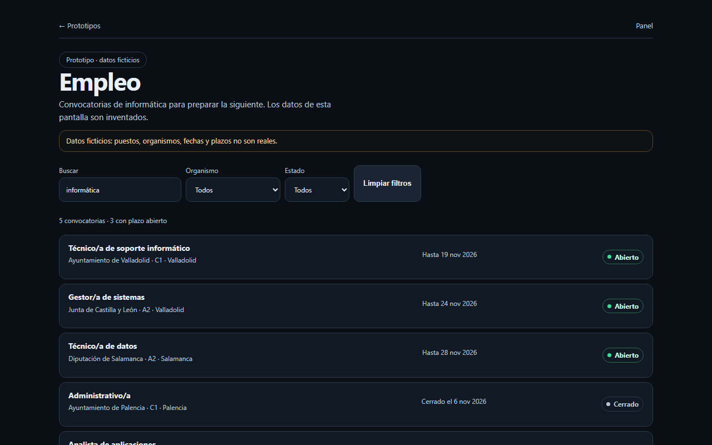
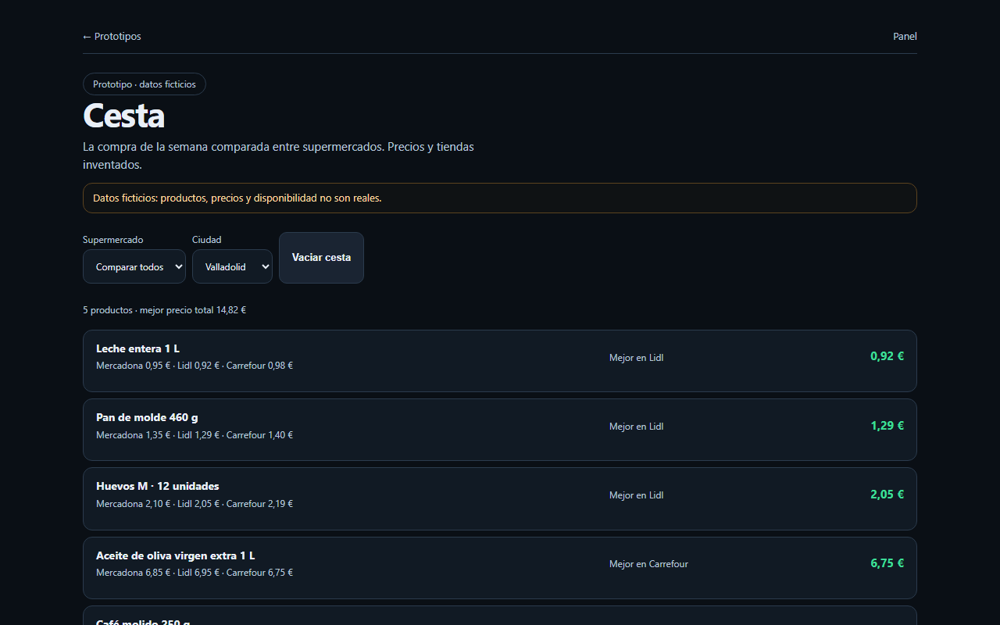
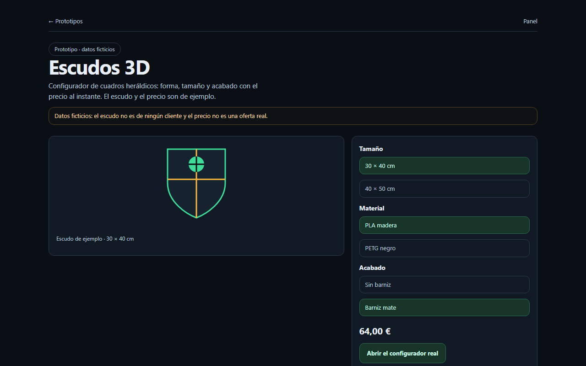
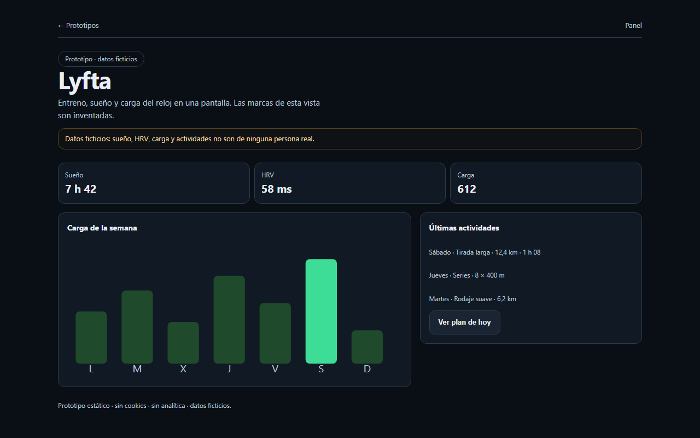
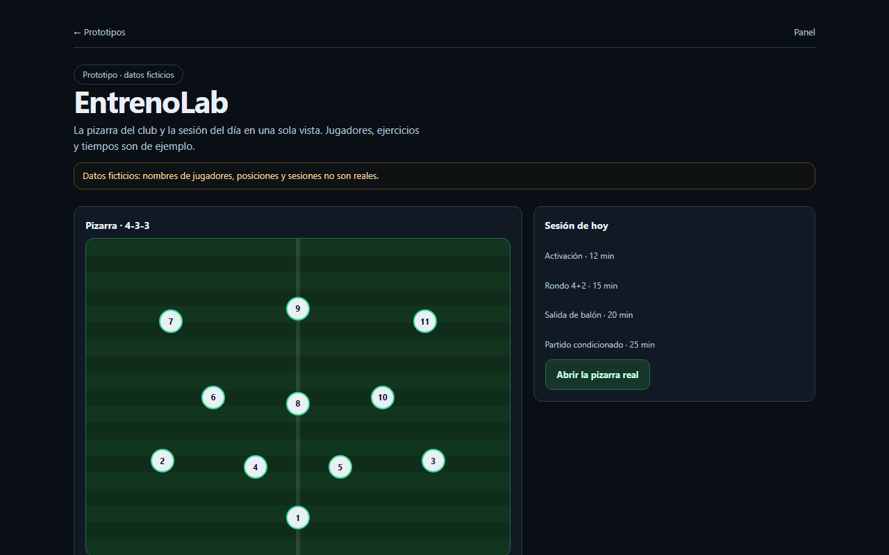
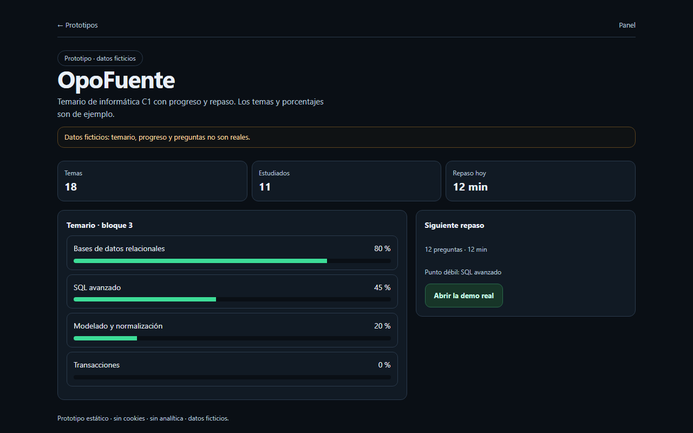

Datos ficticiosEmpleo
Convocatorias de informática con filtros, plazos y estados.
Abrir prototipo de EmpleoSeis pantallas principales para enseñar el producto antes de que la app esté lista. Cada tarjeta abre una página HTML estática con datos ficticios marcados.

Datos ficticiosConvocatorias de informática con filtros, plazos y estados.
Abrir prototipo de Empleo
Datos ficticiosLa compra comparada entre supermercados, con el mejor precio por producto.
Abrir prototipo de Cesta
Datos ficticiosConfigurador de cuadros heráldicos con forma, material y precio al instante.
Abrir prototipo de Escudos
Datos ficticiosEntreno, sueño y carga del reloj en una sola pantalla.
Abrir prototipo de Lyfta
Datos ficticiosLa pizarra del club y la sesión del día en una vista.
Abrir prototipo de EntrenoLab
Datos ficticiosTemario de informática C1 con progreso y repaso.
Abrir prototipo de OpoFuenteOfertas encontradas con histórico de precio, filtros y estados sin resultados.
Todas las páginas son HTML estático: no guardan nada, no piden cuenta y no consultan servicios. Los datos están marcados como ficticios en la cabecera y en el aviso de cada pantalla.
| Prototipo | Pantalla principal | Estados | Datos |
|---|---|---|---|
| Empleo | Lista de convocatorias con filtros y plazos | Abierto, cerrado, sin resultados, error | Puestos y fechas inventados |
| Cesta | Comparación de la compra entre tres tiendas | Cesta vacía, sin precios | Productos y precios inventados |
| Escudos | Configurador con vista previa y precio | Opciones seleccionadas, precio de ejemplo | Escudo y precio inventados |
| Lyfta | Resumen de sueño, HRV y carga semanal | Día con datos, actividad reciente | Marcas y sesiones inventadas |
| EntrenoLab | Pizarra 4-3-3 y sesión del día | Once inicial, sesión con tiempos | Jugadores y ejercicios inventados |
| OpoFuente | Temario con progreso por bloque | Progreso por tema, siguiente repaso | Temas y porcentajes inventados |
| Chollos | Ofertas con histórico de precio | Sin resultados, sin histórico | Productos y tiendas inventados |
Tokens de tipografía de tres tamaños, espaciado de 8 px y contraste alto. Los prototipos y el panel comparten la misma escala.
Cada pantalla lleva un aviso visible. No hay nombres, precios ni métricas de personas reales.
HTML y CSS estático; sin JavaScript, sin cookies, sin analítica y sin llamadas a servicios.
Además del caso feliz, cada prototipo enseña el estado vacío o el error que tendrá la app real.
Se abre con la búsqueda puesta y cinco convocatorias de ejemplo. El recorrido natural es filtrar por organismo, leer el plazo y abrir la ficha. La pantalla incluye el caso de «sin resultados» para que el vacío no se improvise después.
La comparación empieza con cinco productos y tres tiendas. Cada fila muestra el mejor precio y el total de la cesta; los estados de cesta vacía y de tienda sin precios están dibujados para revisarlos antes de implementar.
El configurador enseña la pieza, las opciones y el precio en la misma pantalla. El escudo es un ejemplo: la app real genera el modelo 3D, pero el prototipo permite discutir jerarquía y orden de las opciones sin esperar al motor.
La portada resume sueño, HRV y carga, y añade la semana en barras. Los números son inventados; lo que se revisa es que las tres métricas y las actividades se lean de un vistazo en móvil.
La pizarra 4-3-3 y la sesión del día conviven en dos columnas. El prototipo sirve para decidir si la pizarra manda o si la sesión debe ocupar más espacio; los jugadores y ejercicios son ficticios.
El temario se presenta como una lista de bloques con progreso. El siguiente repaso y el punto débil están siempre visibles; los temas y porcentajes son de ejemplo y no representan un temario oficial.
Los prototipos no son la app: son el contrato visual y de estados que la app tendrá que cumplir.
| Pantalla | Ruta | Archivo |
|---|---|---|
| Empleo | prototipos/empleo.html | empleo.html |
| Cesta | prototipos/cesta.html | cesta.html |
| Escudos | prototipos/escudos.html | escudos.html |
| Lyfta | prototipos/garmin.html | garmin.html |
| EntrenoLab | prototipos/entrenolab.html | entrenolab.html |
| OpoFuente | prototipos/opofuente.html | opofuente.html |
| Chollos | prototipos/chollos.html | chollos.html |
| Estilos compartidos | prototipos/estilo.css | estilo.css |
Decidir si la lista será tabla o tarjetas en móvil y si el filtro de organismo se recuerda al volver de una ficha.
Elegir si el total se calcula con la tienda más barata por producto o con una única tienda; hoy el prototipo mezcla tiendas.
Confirmar si el precio se actualiza al cambiar el material o solo al pulsar «Calcular», y qué pasa si falta un dato.
Decidir qué métrica manda en la portada y si la carga semanal se puede ocultar en pantallas pequeñas.
Elegir entre pizarra grande o sesión grande; el prototipo reparte el espacio a partes casi iguales.
Definir si el progreso se calcula por temas leídos o por preguntas acertadas, y cómo se reinicia.
| Fecha | Cambio | Resultado |
|---|---|---|
| 2026-11-11 | Primera galería con Empleo y Cesta | 2 prototipos |
| 2026-11-11 | Se añaden Escudos, Lyfta, EntrenoLab y OpoFuente | 6 tarjetas |
| 2026-11-11 | Prototipo nuevo de Chollos | 7 pantallas |
Cuando una pantalla cambie en la app, el prototipo debe cambiar en el mismo commit. Si se separan, la galería miente.
Los textos de esta galería se revisan como el resto de la interfaz: etiquetas cortas, sin explicar la interfaz dentro de la interfaz y sin estados inventados que la app no pueda cumplir.
Las vistas previas son capturas reducidas de las mismas páginas; si una captura no coincide con su prototipo, se vuelve a capturar antes de publicar.
Los prototipos son estáticos: no guardan nada, no piden cuenta y no consultan servicios.